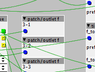
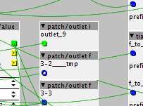
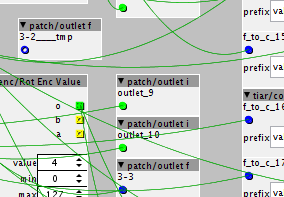

If I use the drop down menu to replace an object, it works, but it leaves behind a tmp object of the object that has been replaced on top of the update:



In order to get it to go away I have to hit undo -- which means I also have to do something like move an object to create something to undo that won't affect work I am doing.
Didn't see anyone else reporting this, so thought I should share.